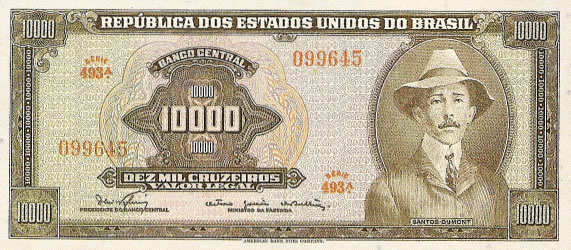

10000 Cruzeiros
Alberto Santos Dumont
Primeira Estampa - ABN
| Num |
Autógrafos e Chancelas |
Data |
Séries |
Tipo |
| 60 |
Dênio Nogueira / Otávio Gouvêia de Bulhões | 1966 | 001/493 | ---- |
| 60 A |
Dênio Nogueira / Otávio Gouvêia de Bulhões | 1966 | 561/590 | ---- |

Estampa:Anverso: Alberto Santos Dumont
Reverso: 14 Bis
Cores:Anverso: Preto, verde e policromia
Reverso: Azul
Dimensões Básicas: 164mmx72mm
Ofertas: Sem ofertas cadastradas
Última Atualização: 27 de Julho de 2012
As imagens foram retiradas do livro "Cédulas Brasileiras de 1942 à 1991" e podem estar sobre copyright. Estão sendo aqui usadas como ferramenta de consulta.
Website desenvolvido em HTML 5, a linguagem do futuro! Feito em Adobe ™ Dreamweaver ® CS 5.5